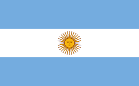

G20 Countries
Famous Tourist Spots

Japan
Sapporo - "The Happening City of Japan"
Sapporo is the capital of Hokkaido and Japans fifth largest city. It is also one of the nations youngest major cities. Sapporo is known for its lively cities, tranquil wildernesses, majestic waterfalls, soaring mountains, wildlife-filled wetlands, glorious architecture and rich culture. Some of its top attractions include the Sapporo Clock Tower, Sapporo Beer Museum, Hokkaido University, Sapporo Station, Sapporo Dome and Sapporo TV Tower seen from Odori Park

France
Louvre Museum - "World's Largest Art Museum"
The Louvre Museum, or simply the Louvre, is a national art museum in Paris, France. It is located inside the Louvre Palace, in the center of Paris, adjacent to the Tuileries Gardens. The Louvre is the worlds largest art museum and a historic monument in Paris, France, and is best known for being the home of the Mona Lisa. The museum is housed in the Louvre Palace, originally built as a fortress in the late 12th to 13th century under Philip II. Remnants of the fortress are visible in the basement of the museum. Due to urban expansion, the fortress eventually lost its defensive function and was converted into a royal palace. The building was extended many times to form the present Louvre Palace.

Mexico
Chichen Itza - "City of the Mayan People"
Chichen Itza was a large pre-Columbian city built by the Mayan people of the Terminal Classic period. The archeological site is located in Tinúm Municipality, Yucatán State, Mexico. The Maya name “Chichen Itza” means “At the mouth of the well of the Itza.” Itzá is the name of an ethnic-lineage group that gained political and economic dominance of the northern peninsula

Argentina
Iguazu Falls - "Largest Waterfall System in the World"
Iguazu Falls are waterfalls of the Iguazu River on the border of the Argentine province of Misiones and the Brazilian state of Paraná. Together, they make up the largest waterfall system in the world. The falls occur along a wide span where the Iguazu River, flowing westward and then northward, tumbles over the edge of the Paraná Plateau before continuing its course in a canyon. Above the falls, islands and islets spread the river into numerous flows that feed the cataracts

Brazil
The Amazon Rainforest - "The Worlds most-varied Biological Reservoir"
The Amazon Rainforest, also known as Amazonia, is a moist broadleaf tropical rainforest in the Amazon biome that covers most of the Amazon basin of South America. The Amazon Rainforest is the worlds richest and most-varied biological reservoir, containing several million species of insects, plants, birds, and other forms of life, many still unrecorded by science.